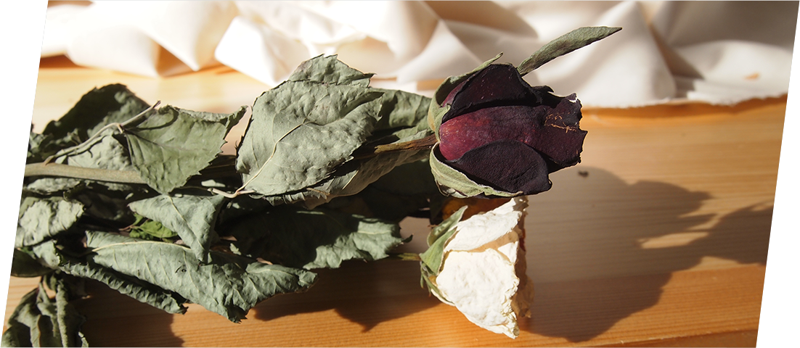

“cherir”はフランス語で「愛する」「大切にする」「慈しむ」という意味があります。もともとお花が好きな方、またそうでない方も少しでもお花に興味を持ち、癒しの時間を大切にしてほしいという願いを込めました。
ドライフラワーが持つ様々な表情を楽しんでください。
お花のある生活が、少しでもあなたをHAPPYにしてくれますように。
vases
お花を飾ったことがない方は、まずは花瓶に生けて見るのがおすすめです。ご自身のお気に入りのドライフラワーを選んで飾ってみましょう！

arrange
花瓶に生けるだけではちょっと物足りないという方は、ご自身でアレンジしてみてはいかがでしょうか。スワッグ・リース・アクセサリーなど、アイデア次第で魅せ方が変わってきます。
present
大切な人への贈り物として、ドライフラワーをプレゼントしてみてはいかがですか。お手入れいらずで長く楽しめるので、きっと喜ばれるのではないでしょうか。